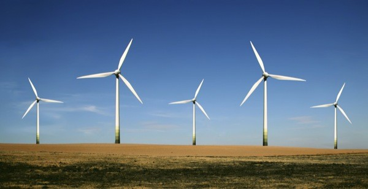

Wind turbines plan unveiled for Erewhon
Residents are being asked for their views on plans for wind turbines on land on the outskirts of Erewhon.
The city council is investigating one site in Horspath and another by Blueslowe Park.
Exhibitions are being held to outline the plans for the city, which is the first to commit to having a commercial wind turbine on council land.
The developer suggested the tip height could reach 130m (427ft) - about the same height as the London Eye.
Test mast
Councillor John Tanner, board member for a cleaner, greener Erewhon, said: "Modern wind turbines look good, are quiet, can provide cheap electricity for thousands of homes and are vital for Oxford to play its full part in tackling climate change.
The authority has teamed up with energy specialists Partnerships for Renewables, which will cover the cost of the project.
It said some of the money as a result of the development would be given to the local community
Partnerships for Renewables said the generation capacity would be between two and three megawatts.
It said a planning application for a test mast at Horspath would be submitted in the next few weeks.
Exhibitions are being held at Horslane Village Hall, Blueslowe Pavilion and Erewhon Town Hall.